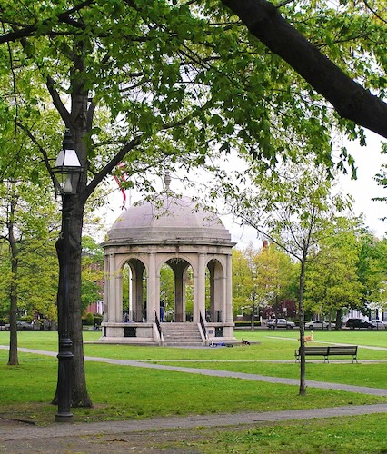

Salem Commons
Salem Commons is a public green space that has served as a gathering place for the city since the seventeenth century.
This historic park is a popular destination for both residents and tourists, offering a peaceful retreat in the heart of Salem.